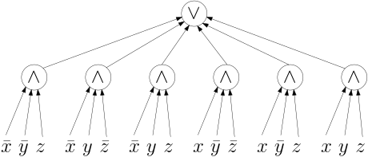
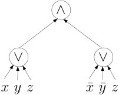

import Section from "~/components/Section";
import Paragraph from "~/components/Paragraph";
import Container from "~/components/Container";
import Carousel from "~/components/Carousel";
import NumberedTitle from "~/components/NumberedTitle";
const Article = () => {
  return (
    <Container>
      <Section
        count={3}
        title_gr="Wahrheitstabellen, CNF und DNF"
        title_en="truth tables cnf dnf"
        number={1.2}
        counter="DefCtr"
        counter="ExoCtr"
        path="/lecture-notes3.tsx">
        <div id="link-to-toc">
          <a href="../vorlesungsskript">
            Inhaltsverzeichnis
          </a>
          <a href="01-01-Fanin-Size-Depth">
            &lt;&lt; Kapitel 1.1
          </a>
        </div>
        <div
          id="link-to-overview"
          style="text-align: end">
          <a href="/">
            zur Kursübersicht
          </a>
          <a href="01-03-binary-adder">
            Kapitel 1.3 &gt;&gt;
          </a>
        </div>
        <div id="rightSideWrapper">
          <div class="content">
            <div class="chapter">
              <div class="subChapter">
                <h1 class="hidden-title">
                  <span class="subChapterTitle">
                    1.2 
                    Wahrheitstabellen, CNF und DNF
                  </span>
                </h1>
                <Paragraph>
                  Wir haben gesehen, dass jeder Schaltkreis eine Boolesche Funktion
                  berechnet. In diesem Abschnitt wollen wir zeigen, dass es umgekehrt
                  auch gilt: zu jeder Booleschen Funktion gibt es einen Schaltkreis (ja:
                  viele Schaltkreise), die sie berechnen. Wir werden insgesamt drei
                  Konstruktionen sehen. Als erstes lassen Sie uns überlegen, wie man
                  eine Boolesche Funktion im Allgemeinen aufschreibt/codiert.
                  Beschränken wir uns erst einmal auf Boolesche Funktionen mit
                  <i>
                    einem
                  </i>
                  {" "}Ausgabewert, also \(f : \&#123;0,1\&#125;^n \rightarrow
                  \&#123;0,1\&#125;\).
                </Paragraph>
                Dies ist ein endliches Objekt, wir können es also codieren, indem wir
                für jeden Eingabewert \( (x_1,\dots,x_n)\) den Ausgabewert angeben. Dies
                nennt man eine{" "}
                <i>
                  Wahrheitstabelle
                </i>
                {" "}(englisch
                <i>
                  truth table
                </i>
                ). Hier sehen Sie ein Beispiel: $$
                \begin&#123;array&#125;&#123;ccc|c&#125; x&amp;y&amp;z&amp;f \\\hline 0&amp;0&amp;0&amp;0 \\ 0&amp;0&amp;1&
                1 \\ 0&amp;1&amp;0&amp;1 \\ 0&amp;1&amp;1&amp;1 \\ 1&amp;0&amp;0&amp;1 \\ 1&amp;0&amp;1&amp;1 \\
                1&amp;1&amp;0&amp;0 \\ 1&amp;1&amp;1&amp;1\\ \end&#123;array&#125; $$ Wie können wir von so
                einer Tabelle ausgehend einen Schaltkreis bauen, der diese Funktion
                berechnet? Ich stelle Ihnen drei Herangehensweisen vor.
                <h3 id="truth-table-top-down">
                  Rekursiv, top-down
                </h3>
                <Paragraph>
                  Wir teilen die Tabelle in die obere Hälfte (wo \(x=0\) gilt) und die
                  untere Hälfte:
                </Paragraph>
                $$\begin&#123;align*&#125; \color&#123;red&#125;&#123; \begin&#123;array&#125;&#123;ccc|c&#125; x&amp;y&amp;z&amp;f \\\hline
                0&amp;0&amp;0&amp;0 \\ 0&amp;0&amp;1&amp;1 \\ 0&amp;1&amp;0&amp;1 \\ 0&amp;1&amp;1&amp;1
                \end&#123;array&#125; &#125;\\ \color&#123;blue&#125;&#123; \begin&#123;array&#125;&#123;ccc|c&#125; 1&amp;0&amp;0&amp;1 \\ 1&
                0&amp;1&amp;1 \\ 1&amp;1&amp;0&amp;0 \\ 1&amp;1&amp;1&amp;1\\ \end&#123;array&#125; &#125; \end&#123;align*&#125;$$
                Die obere, roten Hälfte kommt Ihnen vielleicht bekannt vor: es ist genau
                die Wahrheitstabelle von \(y \vee z\). Der Wert von \(x\) ist im roten
                Teil ja immer \(0\), also ist die obere Hälfte im Prinzip eine Funktion
                mit zwei Variablen: \(y\) und \(z\); wir sagen also mal, die obere
                Hälfte "ist"{" "}
                <span style="color: red">
                  \(y \vee z\)
                </span>
                . Die untere
                Hälfte besteht auch aus drei Einsen und einer Null, allerdings ist die
                Null mittendrin. Überprüfen Sie es, wenn ich Ihnen sage, dass die untere
                Hälfte{" "}
                <span style="color: blue">
                  \(\bar&#123;y&#125; \vee z\)
                </span>
                &ensp;ist (ich
                schreibe im Fließtext übrigens gerne \(\bar&#123;y&#125;\) statt \(\neg y\), weil
                das mir lesbarer erscheint). Insgesamt also:
                <figure>
                  f ={" "}
                  <code>
                    if
                  </code>
                  {" "}\(x\){" "}
                  <code>
                    then
                  </code>
                  {" "}\(\bar&#123;y&#125; \vee z\)
                  <code>
                    else
                  </code>
                  {" "}\(y \vee z\).
                </figure>
                <Paragraph>
                  Jetzt können wir das mit unserem if-then-else-Schaltkreis kombinieren.
                </Paragraph>
                <div class="well well-lg numbered-exercise container">
                  <span class="numbered-title">
                    Übungsaufgabe
                    <NumberedTitle>
                      &ensp;1.2.1{" "}
                    </NumberedTitle>
                  </span>
                  Führen Sie die Konstruktion zu Ende, indem Sie \(\bar&#123;y&#125; \vee z\) und
                  \(y \vee z\) mit dem if-then-else-Schaltkreis kombinieren.
                </div>
                <Paragraph>
                  Können wir das mit beliebigen Funktionen machen? Ja klar! Wir gehen
                  wie folgt vor:
                </Paragraph>
                <ol>
                  <li>
                    Teile die Tabelle in die oberen \(2^&#123;n-1&#125;\) Zeilen (für die \(x_1 =
                    0\) gilt) und die unteren \(2^&#123;n-1&#125;\) Zeilen (für die \(x_1 = 1\)
                    gilt) auf.
                  </li>
                  <li>
                    Jede Hälfte kann als Boolesche Funktion mit \(n-1\) Variablen
                    betrachtet werden. Bauen Sie rekursiv Schaltkreise \(C_0\) für die
                    obere und \(C_1\) für die untere Hälfte, beide mit Input-Variablen
                    \(x_2,\dots,x_n\).
                  </li>
                  <li>
                    Kombinieren Sie diese via
                    &ensp;`if` \(x_1\) 
                    &ensp;`then` 
                    &ensp;\(C_1\)
                    &ensp;`else` 
                    &ensp;\(C_0\) zu einem Schaltkreis für \(f\) mit
                    insgesamt \(n\) Input-Variablen.
                  </li>
                </ol>
                <Paragraph>
                  An dieser Stelle zahlt es sich aus, eine formale Notation einzuführen:
                </Paragraph>
                <div class="well container theorem">
                  <span class="numbered-title">
                    Definition
                    <NumberedTitle>
                      &ensp;1.2.1{" "}
                    </NumberedTitle>
                  </span>
                  Sei \(f: \&#123;0,1\&#125;^n \rightarrow \&#123;0,1\&#125;\) eine Boolesche Funktion, \(i
                  \in \&#123;1,\dots,n\&#125;\) ein Index und \(b \in \&#123;0,1\&#125;\) ein Wert. Dann ist
                  \(f|_&#123;x_i=b&#125;\) eine neue Funktion, und zwar $$\begin&#123;align*&#125; f|_&#123;x_i=b&#125;
                  &amp;: \&#123;0,1\&#125;^&#123;n-1&#125; \rightarrow \&#123;0,1\&#125; \\ (x_1,\dots,x_&#123;i-1&#125;, x_&#123;i+1&#125;,
                  \dots, x_n)&amp;\mapsto f(x_1,\dots,x_&#123;i-1&#125;, b, x_&#123;i+1&#125;, \dots, x_&#123;n&#125;) \
                  . \end&#123;align*&#125;$$
                  <Paragraph>
                    In Worten: wir fixieren den \(i\)-ten Input auf den Wert \(b\) und
                    erhalten eine Funktion in den restlichen \(n-1\) Variablen.
                  </Paragraph>
                </div>
                <Paragraph>
                  Das Ergebnis ist im Allgemeinen sehr groß, aber was erwarten Sie bei
                  einer Tabelle mit \(2^n\) Zeilen?
                </Paragraph>
                <div class="well well-lg numbered-exercise container">
                  <span class="numbered-title">
                    Übungsaufgabe
                    <NumberedTitle>
                      &ensp;1.2.2{" "}
                    </NumberedTitle>
                  </span>
                  Führen Sie das rekursive Verfahren durch, um für die folgende Funktion
                  auf 4 Variablen einen Schaltkreis zu bauen: $$ \begin&#123;array&#125;&#123;cccc|c&#125; u
                  &amp;x&amp;y&amp;z&amp;f \\\hline 0&amp;0&amp;0&amp;0&amp;1 \\ 0&amp;0&amp;0&amp;1&amp;1 \\ 0&
                  0&amp;1&amp;0&amp;1 \\ 0&amp;0&amp;1&amp;1&amp;0 \\ 0&amp;1&amp;0&amp;0&amp;1 \\ 0&amp;1&amp;0&
                  1&amp;0 \\ 0&amp;1&amp;1&amp;0&amp;1 \\ 0&amp;1&amp;1&amp;1&amp;0\\ \hline 1&amp;0&amp;0&amp;0
                  &amp;0 \\ 1&amp;0&amp;0&amp;1&amp;0 \\ 1&amp;0&amp;1&amp;0&amp;1 \\ 1&amp;0&amp;1&amp;1&amp;1 \\
                  1&amp;1&amp;0&amp;0&amp;1 \\ 1&amp;1&amp;0&amp;1&amp;1 \\ 1&amp;1&amp;1&amp;0&amp;0 \\ 1&amp;1&
                  1&amp;1&amp;0\\ \end&#123;array&#125; $$
                </div>
                <h3>
                  Bottom-Up, als DNF
                </h3>
                <Paragraph>
                  Wenn Sie Rekursionshasser sind und generell lieber in`for`-Schleifen denken, dann wird die nächste Konstruktion
                  mehr nach Ihrem Geschmack sein. Im Prinzip werden wir alle
                  Kombinationen der Variablen auflisten, für die die Funktion 1 ausgibt.
                  Stellen Sie sich vor, wir haben drei Variable \(x,y,z\) und einen
                  AND-Ausdruck, der jede Variable oder deren Negation enthält, also zum
                  Beispiel $$ x \wedge \bar&#123;y&#125; \wedge z \ . $$ Von den 8 möglichen
                  Input-Tupeln gibt es nur eins, für das dieser Ausdruck eine 1 ausgibt,
                  in diesem Falle \((1,0,1)\). Wir werden nun also für jede 1-Zeile
                  unserer Wahrheitstabelle einen solchen Ausdruck hinschreiben und diese
                  dann in einem großen OR zusammenführen. Einen Ausdruck, der aus einem
                  AND von Variablen oder deren Negation besteht, nennt man auch einen
                  <i>
                    Term
                  </i>
                  .
                </Paragraph>
                $$ \begin&#123;array&#125;&#123;ccc|c|c&#125; x&amp;y&amp;z&amp;f&amp;&#123;\rm Term&#125;\\\hline 0&amp;0&amp;0&
                0&amp;\\ 0&amp;0&amp;1&amp;1&amp;\bar&#123;x&#125; \wedge \bar&#123;y&#125; \wedge z \\ 0&amp;1&amp;0&amp;1
                &amp;\bar&#123;x&#125; \wedge y \wedge \bar&#123;z&#125; \\ 0&amp;1&amp;1&amp;1&amp;\bar&#123;x&#125; \wedge y
                \wedge z \\ 1&amp;0&amp;0&amp;1&amp;x \wedge \bar&#123;y&#125; \wedge \bar&#123;z&#125; \\ 1&amp;0&amp;1
                &amp;1&amp;x \wedge \bar&#123;y&#125; \wedge z \\ 1&amp;1&amp;0&amp;0&amp;\\ 1&amp;1&amp;1&amp;1&amp;x
                \wedge y \wedge z \\ \end&#123;array&#125; $$
                <Paragraph>
                  Mit einem großen OR zusammengeführt ergibt das dann
                </Paragraph>
                <figure>
                  
                </figure>
                In diesem Schaltkreis habe ich die Input-Knoten mehrfach aufgeführt und
                die NOT-Gates nicht explizit aufgeführt, damit kein "Kabelsalat"
                entsteht. Beachten Sie auch, das jedes Gate (außer den Input-Gates)
                genau{" "}
                <i>
                  eine
                </i>
                {" "}ausgehende Kante hat. Konkret bedeutet dies, dass
                man diesen Schaltkreis als{" "}
                <i>
                  logische Formel
                </i>
                {" "}hinschreiben kann:
                $$ (\bar&#123;x&#125; \wedge \bar&#123;y&#125; \wedge z) \vee (\bar&#123;x&#125; \wedge y \wedge
                \bar&#123;z&#125;) \vee (\bar&#123;x&#125; \wedge y \wedge z) \vee (x \wedge \bar&#123;y&#125; \wedge
                \bar&#123;z&#125;) \vee (x \wedge \bar&#123;y&#125; \wedge z) \vee (x \wedge y \wedge z) $$
                <div class="well container theorem">
                  <span class="numbered-title">
                    Definition
                    <NumberedTitle>
                      &ensp;1.2.2{" "}
                    </NumberedTitle>
                  </span>
                  Ein{" "}
                  <i>
                    Literal
                  </i>
                  {" "}ist eine Variable \(x\) oder deren Negation
                  \(\bar&#123;x&#125;\). Ein{" "}
                  <i>
                    Term
                  </i>
                  {" "}ist ein AND (auch: Konjunktion) von
                  Literalen (beispielsweise \(\bar&#123;x&#125; \wedge \bar&#123;y&#125; \wedge z)\). Eine
                  Formel in{" "}
                  <i>
                    disjunktiver Normalform
                  </i>
                  {" "}(DNF) ist ein OR von
                  Termen.
                  <Paragraph>
                    Alternativ: eine DNF ist ein Schaltkreis der Tiefe 2 (wobei
                    NOT-Gates nicht mitzählen), dessen Output-Gate ein OR-Gate ist.
                  </Paragraph>
                </div>
                <div class="well well-lg numbered-exercise container">
                  <span class="numbered-title">
                    Übungsaufgabe
                    <NumberedTitle>
                      &ensp;1.2.3{" "}
                    </NumberedTitle>
                  </span>
                  Was, wenn einige der "mittleren" Gates (auf Tiefe 1) keine AND-Gates
                  sind, sondern auch OR-Gates? Dann wäre dies nach der ersten Definition
                  <i>
                    keine
                  </i>
                  {" "}DNF-Formel, nach der zweiten aber schon. Zeigen Sie,
                  wie man OR-Gates auf Ebene 1 entfernen kann! Als konkretes Beispiel:
                  <figure>
                    
                  </figure>
                </div>
                <h3>
                  Bottom-Up, als CNF
                </h3>
                <Paragraph>
                  Zu der eben demonstrierten Konstruktion gibt es noch eine weitere,
                  dazu duale Konstruktion. Bildlich gesprochen listet DNF-Konstruktion
                  alle Möglichkeiten auf, wie man eine 1 erhalten kann. Dual dazu können
                  wir alle Möglichkeiten auflisten, wie man eine 0 erhalten kann; tritt
                  <i>
                    keine
                  </i>
                  {" "}davon ein, muss wohl eine 1 herauskommen. Wir gehen
                  also in der Wahrheitstabelle alle Zeilen mit Wert 0 durch und
                  schreiben einen Ausdruck, der genau diese Zeile verbietet. So kann man
                  den Ausdruck \( (\bar&#123;x&#125; \vee \bar&#123;y&#125; \vee z)\) verstehen als
                  "\((x,y,z)\) darf nicht \((1,1,0)\) sein." An dem obigen Beispiel
                  ergibt dies:
                </Paragraph>
                $$ \begin&#123;array&#125;&#123;ccc|c|c&#125; x&amp;y&amp;z&amp;f&amp;&#123;\rm Term&#125;\\\hline 0&amp;0&amp;0&
                0&amp;x \vee y \vee z \\ 0&amp;0&amp;1&amp;1&amp;\\ 0&amp;1&amp;0&amp;1&amp;\\ 0&amp;1&amp;1&
                1&amp;\\ 1&amp;0&amp;0&amp;1&amp;\\ 1&amp;0&amp;1&amp;1&amp;\\ 1&amp;1&amp;0&amp;0&amp;\bar&#123;x&#125;
                \vee \bar&#123;y&#125; \vee z\\ 1&amp;1&amp;1&amp;1&amp;\\ \end&#123;array&#125; $$ Einen Ausdruck
                der Form \(\bar&#123;x&#125; \vee \bar&#123;y&#125; \vee z\), also ein OR von Literaten,
                nennt man auch eine{" "}
                <i>
                  Klausel
                </i>
                . Eine Klausel mit \(n\) (hier:
                \(n=3\)) Literaten verbietet genau ein Tupel von Wahrheitswerten. Wenn
                wir also alle Verbote mit AND verknüpfen, erhalten wir
                <figure>
                  
                </figure>
                <div class="well container theorem">
                  <span class="numbered-title">
                    Definition
                    <NumberedTitle>
                      &ensp;1.2.3{" "}
                    </NumberedTitle>
                  </span>
                  Eine Formel in{" "}
                  <i>
                    konjunktiver Normalform
                  </i>
                  {" "}(CNF) ist ein AND von
                  Klauseln.
                  <Paragraph>
                    Alternativ: eine CNF-Formel ist ein Schaltkreis der Tiefe 2 (wobei
                    NOT-Gates nicht mitzählen), dessen Output-Gate ein AND-Gate ist.
                  </Paragraph>
                </div>
                <Paragraph>
                  In diesem konkreten Beispiel ist die CNF viel kürzer als die DNF (das
                  ist Zufall; ich habe meine Tabelle mit Zufallswerten erzeugt).
                  Allerdings können wir, ausgehend von der "rohen" DNF (oder CNF), diese
                  noch nachträglich bearbeiten und kleiner machen. Zum Beispiel können
                  wir "nebeneinanderstehende" Terme zu einem einzigen zusammenziehen,
                  z.B. :
                </Paragraph>
                $$ (\bar&#123;x&#125; \wedge y \wedge \bar&#123;z&#125;) \vee (\bar&#123;x&#125; \wedge y \wedge z)
                \equiv \bar&#123;x&#125; \wedge y \ . $$
                <div class="well well-lg numbered-exercise container">
                  <span class="numbered-title">
                    Übungsaufgabe
                    <NumberedTitle>
                      &ensp;1.2.4{" "}
                    </NumberedTitle>
                  </span>
                  Minimieren Sie die obige DNF (die mit den 6 Termen), indem Sie gewisse
                  Paare von Termen zu einem kürzeren zusammenfassen.
                </div>
                <div class="well well-lg numbered-exercise container">
                  <span class="numbered-title">
                    Übungsaufgabe
                    <NumberedTitle>
                      &ensp;1.2.5{" "}
                    </NumberedTitle>
                  </span>
                  Zeigen Sie, dass es zu jeder Booleschen Funktion \(f: \&#123;0,1\&#125;^n
                  \rightarrow \&#123;0,1\&#125;\) eine äquivalente DNF-Formel mit höchstens
                  \(2^&#123;n-1&#125;\) Termen gibt.
                </div>
                <div class="well well-lg numbered-exercise container">
                  <span class="numbered-title">
                    Übungsaufgabe
                    <NumberedTitle>
                      &ensp;1.2.6{" "}
                    </NumberedTitle>
                  </span>
                  Zeigen Sie, dass jede DNF-Formel für die Boolesche Funktion \(x_1
                  \oplus \dots \oplus x_n\) genau \(2^&#123;n-1&#125;\) Terme besitzen muss.
                </div>
                <Paragraph>
                  Sie haben eventuell von Methoden zur Minimierung von DNFs bzw. CNFs
                  oder Schaltkreisen im Allgemeinen gehört, z.B. Karnaugh-Diagramme.
                  Dies sind{" "}
                  <i>
                    Heuristiken
                  </i>
                  , die hilfreich sind, aber nicht
                  garantieren können, eine optimale Lösung zu finden (es sind also keine
                  <i>
                    Algorithmen
                  </i>
                  {" "}in dem Sinne). Die genaue Komplexität dieser
                  Optimierungsprobleme ist in der Tat Gegenstand aktiver Forschung,
                </Paragraph>
                <ol>
                  <li>
                    Wenn die Funktion (1) bereits als{" "}
                    <i>
                      Boolesche Formel
                    </i>
                    {" "}vorliegt
                    (also Schaltkreise, in denen außer den Eingabe-Gates alle Gates nur
                    eine ausgehende Kante haben), so ist das Minimierungsproblem
                    \(Sigma_2^&#123;P&#125;\)-vollständig, siehe
                    <a href="http://users.cms.caltech.edu/~umans/papers/BU07.pdf">
                      &ensp;Buchfuhrer, David; Umans, Christopher (January 2011),
                      <i>
                        The complexity of Boolean formula minimization
                      </i>
                      {" "}(JCSS
                      2011){" "}
                    </a>
                    .
                  </li>
                  <li>
                    Wenn die Funktion (2) als Tabelle gegeben ist, dann ist die genaue
                    Komplexität nicht genau bekannt. Es hat in den letzten Jahren
                    Fortschritte gegeben (die nahelegen, dass das Problem tatsächlich
                    schwierig ist), z.B.
                    <a href="https://drops.dagstuhl.de/opus/volltexte/2020/12574/pdf/LIPIcs-CCC-2020-22.pdf">
                      &ensp;Ilango, Loff, and Oliveira.
                      <i>
                        NP-Hardness of Circuit Minimization for Multi-Output
                        Functions
                      </i>
                      , (CCC 2020){" "}
                    </a>
                    .
                  </li>
                </ol>
                Beachten Sie, dass (2) algorithmisch einfacher ist: durch die
                "verschwenderische" Darstellung der Funktion als Tabelle ist bereits der
                Input sehr groß (\(2^n\) Bits), sodass ein Algorithmus, der hier
                versucht, zu minimieren, bereits ein großes "Zeitbudget" hat. Dennoch
                ist das Problem höchstwahrscheinlich schwierig.
              </div>
            </div>
          </div>
        </div>
      </Section>
    </Container>
  );
};

export default Article;